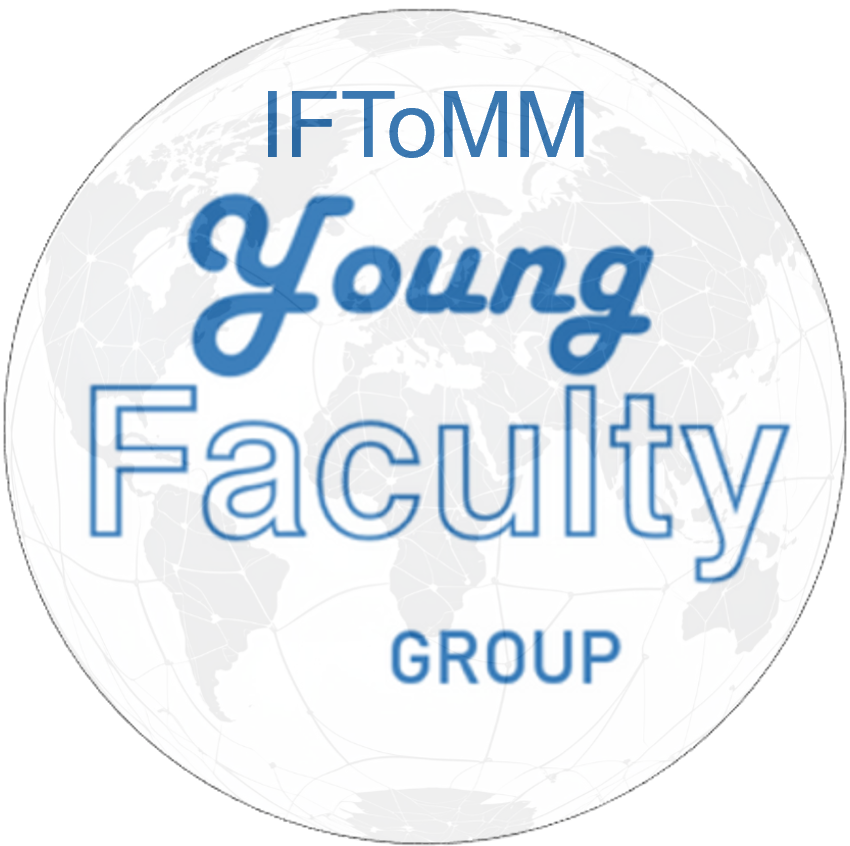

| Home | Program | Topics | Submission | Registration |
The International Federation for the Promotion of Mechanism and Machine Science (IFToMM) is one of the largest international scientific communities dedicated to the field of mechanism and machine science and its applications.
Since its foundation in 1965, its mission has been to bring people from all nationalities and systems together to exchange science and technology as well as to strengthen their international bonds. IFToMM’s Young Faculty Group is a cross-disciplinary group pursuing IFToMM’s mission from within the working core of academia. By summoning young professors and lecturers from all over the world, the group aims at figuring out how to use mechanism and machine science to tackle the academic and technological challenges of the future.
You can see more information about us on the official site of Young Faculty Group.
The IFToMM YFG-MMS Online Symposium is a single-track, peer-reviewed, online event designed to foster international networking among young faculty members via a novel format.
Each talk is structured in two parts:
(1) 5 minutes to introduce yourself, your strengths and interests,
(2) 10 to 15 minutes to present the topic covered in the abstract.
Each session will consist of 4 to 5 talks on different topics, followed by 15-minute parallel discussions in break-out rooms, allowing for the delegates to choose which discussion to attend.
Claudio Villegas (Chile)
Francisco Geu Flores (Germany)
Sajjad Keshtkar (Japan)
Jiang Ming (Japan)
Qizhi Meng (China)
Onur Denizhan (Turkey)
Pau Català (Spain)
Saioa Herrero (Spain)
|
|
 |